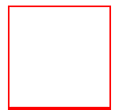
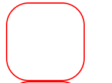

Границы
Граница отделяется элемент от внешнего по отношению к нему содержимого. При этом граница является частью элемента.:
Для настройки границы могут использоваться сразу несколько свойств:
- border-width: устанавливает ширину границы
- border-style: задает стиль линии границы
- border-color: устанавливает цвет границы
Свойство border-width может принимать следующие типы значений:
- Значения в единицах измерения, таких как em, px или cm
border-width: 2px;
border-width: medium;
Свойство border-color в качестве значения принимает цвет CSS:
border-color: red;
Свойство border-style оформляет тип линии границы и может принимать одно из следующих значений:
border-color: red;
- none: граница отсутствует
- solid: граница в виде обычной линии
- dashed: штриховая линия
- dotted: линия в виде последовательности точек
- double: граница в виде двух параллельных линий
- groove: граница имеет трехмерный эффект
- inset: граница как бы вдавливается во внутрь
- outset: аналогично inset, только граница как бы выступает наружу
- ridge: граница также реализует трехмерный эффект
Например:
<!DOCTYPE html>
<html>
<head>
<meta charset="utf-8">
<title>Блочная модель в CSS3</title>
<style>
div{
width: 100px;
height:100px;
border-style: solid;
border-color: red;
border-width: 2px;
}
</style>
</head>
<body>
<div></div>
</body>
</html>

При необходимости мы можем определить цвет, стиль и ширину границы для каждой из сторон используя следующие свойства:
/* для верхней границы */
border-top-width
border-top-style
border-top-color
/* для нижней границы */
border-bottom-width
border-bottom-style
border-bottom-color
/* для левой границы */
border-left-width
border-left-style
border-left-color
/* для правой границы */
border-right-width
border-right-style
border-right-color
Другие Статьи
Вместо установки по отдельности цвета, стиля и ширины границы мы можем использовать одно свойство - border:
border: ширина стиль цвет
Например:
border: 2px solid red;
Для установки границы для отдельных сторон можно использовать одно из свойств:
border-top
border-bottom
border-left
border-right
Их использование аналогично:
border-top: 2px solid red;
Радиус границы
Свойство border-radius позволяет округлить границу. Это свойство принимает значение радиуса в пикселях или единицах em.
<!DOCTYPE html>
<html>
<head>
<meta charset="utf-8">
<title>Блочная модель в CSS3</title>
<style>
div{
width: 100px;
height:100px;
border: 2px solid red;
border-radius: 30px;
}
</style>
</head>
<body>
<div></div>
</body>
</html>
Теперь каждый угол будет скругляться по радиусу в 30 пикселей:
Так как у элемента может быть максимально четыре угла, то мы можем указать четыре значения для установки радиуса у каждого углов:
border-radius: 15px 30px 5px 40px;
Вместо общей установки радиусов для всех углов, можно их устанавливать по отдельности. Так, предыдущее значение border-radius можно переписать следующим образом:
border-top-left-radius: 15px; /* радиус для верхнего левого угла */
border-top-right-radius: 30px; /* радиус для верхнего правого угла */
border-bottom-right-radius: 5px; /* радиус для нижнего левого угла */
border-bottom-left-radius: 40px; /* радиус для нижнего правого угла */
Также border-radius поддерживает возможность создания эллиптических углов. То есть угол не просто скругляется, а использует два радиуса, образуя в итоге душу эллипса:
border-radius: 40px/20px;
В данном случае полагается, что радиус по оси X будет иметь значение 40 пикселей, а по оси Y - 20 пикселей.